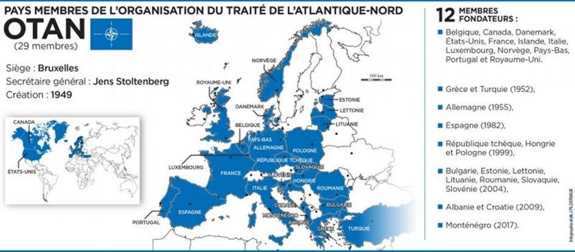

L’art de l’esquive, pratiqué à la perfection par Jens Stoltenberg, Secrétaire général de l’Alliance de l’Atlantique Nord, fut déployé dans toute sa splendeur lors d’un entretien accordé début décembre 2020 à Politico. Tous les sujets polémiques y furent passés en revue, sans même l’ombre d’une réponse ou d’une clarification pour aucun d’entre eux. En revanche, on a pu y admirer les principaux éléments de langage auxquels on aura droit dans les prochains mois. Petit dictionnaire du volapük otanien.
Au sujet du départ (ou pas) d’Afghanistan, qualifié d’un des choix les plus difficiles dans les mois qui viennent, Stoltenberg reste prudent: « C’est un dilemme compliqué pour l’OTAN. Si nous restons, nous risquons davantage de combats, si nous partons, on risque de perdre ce que l’on avait obtenu ». Le Secrétaire général réussit tout de même à y glisser deux inepties1. D’une part, il insiste : « Nous, y compris les Européens, nous sommes là pour protéger nos propres intérêts ». Pour rappel, l’ancien ambassadeur US à l’Alliance atlantique, Robert Hunter, ne partage pas cette analyse.
D’après lui, la participation des Européens sur le théâtre afghan est motivée par le seul souhait de « faire plaisir à l’Amérique ».2 D’autre part, Stoltenberg reprend la rengaine selon laquelle « nous somme dedans tous ensemble, nous y sommes entrés ensemble, nous devrions partir ensemble ». C’est beau, c’est fraternel, cela n’a rien à voir avec le réel. L’engagement de l’OTAN en Afghanistan fut marqué, de bout en bout, par d’incessants appels américains aux alliés européens à envoyer plus de soldats et à lever les restrictions nationales qui encadrent l’usage de la force (les fameux caveats). Exaspérés, les Américains se moquaient de l’ISAF (la force multinationale sous commandement OTAN), en l’appelant I Saw Americans Fight, pour « j’ai vu les Américains combattre ».
Quant à partir main dans la main, le prédécesseur de Stoltenberg avait mis en garde noir sur blanc, il y a treize ans, les alliés trop pressés : « personne ne peut partir et personne ne va partir d’Afghanistan ».3
Concernant la présence américaine en Europe, le Secrétaire général de l’OTAN tient à rassurer les alliés européens : « les États-Unis resteront engagés dans l’OTAN et continueront à maintenir une présence militaire significative sur le continent ». Cela n’a jamais fait aucun doute. Comme l’a noté Richard Haass, ancien directeur de planification politique au Département d’État et conseiller du Secrétaire d’État Colin Powell : « Les États-Unis restent dans l’OTAN et la soutiennent pour rendre service non pas aux Européens mais à eux-mêmes. Être membre de l’OTAN est un acte d’intérêt stratégique, non pas de philanthropie ».4 Intérêt même à triple titre : la tutelle sur les Européens, dont la plupart s’en accommodent avec une désinvolture à couper le souffle, procure des bénéfices majeurs à Washington. Les protégés européens – ou « vassaux » pour reprendre le terme qu’utilise pour les désigner l’ancien conseiller à la sécurité nationale Zbigniew Brzezinski – sont des interlocuteurs malléables sur d’autres sujets (Iran, énergie, cyber, Russie, Chine, espace, commerce), et ils se prêtent aussi, bon gré mal gré, à l’embrigadement au service de la grande stratégie américaine. Finalement, ils consentent à se priver eux-mêmes de l’ambition et des moyens d’agir de façon indépendante en défense de leurs propres intérêts. Bref, l’Amérique n’a effectivement aucune raison, et aucune intention, d’abandonner son « protectorat » européen.
L’attachement américain à l’OTAN est d’autant plus fort que la menace chinoise se profile nettement à l’horizon. Stoltenberg n’a pas tort d’affirmer que « la Chine constitue un défi pour tous les alliés », mais son argument laisse à désirer. D’abord, il prétend qu’en raison de ce défi « l’OTAN est encore plus importante qu’avant ». Or, à moins de vouloir faire un remake de la guerre froide – avec les Européens en rôle d’auxiliaires face à un adversaire qui n’est même pas, cette fois-ci, dans leur proximité géographique – on ne voit pas pourquoi. La consultation entre alliés, certes, serait cruciale, voire la coordination entre politiques souveraines là où c’est faisable, mais l’OTAN n’est surtout pas le cadre idéal pour cela. La tentation existe. Comme le dit l’excellent Stephen M. Walt, « pour sauver l’OTAN, les Européens doivent devenir l’ennemi de la Chine ».5 Sous-entendu : tous alignés derrière les États-Unis. Pour mieux convaincre, le Secrétaire général a recours à un argument usé jusqu’à l’ennui : face à la Chine, dit-il, « même l’Amérique, aussi puissante soit-elle, ne peut pas se débrouiller tout seule, elle a besoin d’alliés ». Sauf que c’était exactement la même rengaine après le 11 septembre, ou suite à la crise financière de 2008, afin de flatter l’ego des Européens et leur cacher la triste réalité : à partir de leur position de dépendance ils ne peuvent aspirer qu’à un rôle de faire-valoir et de supplétifs.
Pour maximiser les avantages de l’OTAN, il faut aussi que les moutons noirs rentrent dans les rangs et soient privés de leur capacité de nuisance. A en croire Stoltenberg, rien de plus simple : qu’il s’agisse de la Hongrie ou de la Turquie, « il faut soulever les problèmes, mais s’assurer que nous restions soudés ». Le Secrétaire général assène donc que « l‘OTAN est une alliance basée sur des valeurs, une communauté de démocraties partageant la même vision des choses ». Il en profite pour réchauffer l’ancienne idée favorite de l’Amérique : transformer l’OTAN en une sorte d’alliance des démocraties, en tissant des liens toujours plus étroits « avec les partenaires en Asie : la Nouvelle-Zélande, le Japon, l’Australie ».6 Surtout, Stoltenberg indique, subrepticement, la piste royale pour dompter les récalcitrants : contourner d’une manière ou d’une autre la fameuse règle du consensus dans l’OTAN. Certes, il affirme : « l’OTAN restera une organisation basée sur le consensus », mais le diable est dans l’ajout du petit détail : « nous allons chercher des moyens pour rendre la prise de décision plus efficace ». Il s’agit là d’une volonté américaine de longue date.7 Sous prétexte d’efficacité, et surtout pour s’épargner l’éventuel veto des brebis galeuses, l’idée est de déléguer plus d’autorité et de pouvoir discrétionnaire au SACEUR, le général américain commandant suprême de l’OTAN, répondant directement à la Maison Blanche. Pour des raisons évidentes, le projet fut mis en hibernation pendant les années Trump, mais avec des Européens soucieux de donner des gages à la nouvelle administration Biden, il risque de revenir dans les prochains mois.
Pour ce qui est de l’Europe de la défense, le Secrétaire général de l’Alliance réagit de manière viscérale, en rétorquant pour la énième fois : « sans l’Amérique l’Europe ne peut pas se défendre ». En réalité, que l’Europe puisse se défendre ou pas, Stoltenberg ne s’en soucie même pas. L’important, c’est de ne pas donner de mauvaises idées. Dans un rare moment de vérité, il avait déjà admis : « nous devons éviter toute perception selon laquelle l’Europe pourrait gérer les choses sans l’OTAN ».8 Sauf que, à ce propos, le journaliste de Politico, David Herszenhorn, a malicieusement pointé du doigt l’éléphant dans la salle : « l’extension proposée du parapluie nucléaire français aux partenaires de l’UE ne serait-elle pas de nature à rassurer les Européens de l’Est ? ». On peut difficilement faire plus cruel. Sans surprise, Stoltenberg ressort les poncifs habituels, actualisées post-Brexit : seuls 20% des dépenses militaires de l’OTAN viennent des pays de l’UE. A ceci près que l’écrasante majorité des 80 % restants – le budget du Pentagone, en gros – n’a strictement rien à voir avec la sécurité européenne, voire elle la met en péril (en détruisant sa base technologique et industrielle de défense, en consolidant une posture de confrontation avec la Russie, en imposant une autre en Asie-Pacifique, en entraînant les Européens dans des aventures militaires aussi coûteuses qu’infructueuses ; et la liste est loin d’être exhaustive).
Photo prise le 16 juin 2017, des soldats américains posant pendant les exercices militaires de l'OTAN Sabre Strike à Orzysz, en Pologne.
S’agissant de l’autonomie européenne, rien d’étonnant, Jens Stoltenberg a recours à la formule bien rodée : « je soutiens le renforcement des efforts européens dans la défense, à condition qu’ils soient complémentaires à l’OTAN, ne dupliquent pas les capacités de l’Alliance et ne constituent pas une alternative ». Pour rappel : s’il y a besoin de défense européenne hors OTAN, c’est justement dans l’hypothèse que les intérêts américains et européens ne coïncident pas toujours forcément. Dans ce cas-là, il faut bel et bien une « alternative », et décider ce qui est duplication nécessaire ou pas dans cette perspective, est un choix éminemment politique. Force est de constater que, de ce côté-là, Jens Stoltenberg peut dormir tranquille.
Le journaliste de Politico évoque aussi ce moment mémorable, au sommet de Londres de l’OTAN en décembre 2019, lorsque Donald Trump s’est érigé en défenseur de l’Alliance face à la remarque d’Emmanuel Macron sur « la mort cérébrale » de l’OTAN. Stoltenberg se félicite du revirement du président américain et fait un lien avec « la question clé qu’est l’augmentation du budget de défense des alliés européens », laquelle n’est pourtant que la partie émergée de l’iceberg. La volte-face de Trump est survenue après trois ans de concessions européennes sur l’accès des USA au fonds européen de l’UE en matière d’armement, sur l’approvisionnement énergétique, sur les relations avec la Russie, et – au sommet de Londres justement – l’acquiescement à désigner le défi chinois nommément à l’ordre du jour de l’OTAN, de même que l’inclusion de l’espace à la liste des compétences de l’Alliance. Autant d’abandons, du côté européen, qui ont fini par convaincre le président américain que l’OTAN n’est peut-être pas si « obsolète ». Donald Trump lui-même l’admet : « Si je suis devenu un ‘fan’ de l’OTAN, c’est parce qu’ils ont été si flexibles »9… Flexibles ? Est-ce bien le bon terme ?10
H.V.
NOTES ET RÉFÉRENCES
1. Presenting the POLITICO 28 Class of 2021, POLITICO Events, Entretien filmé de David Herszenhorn avec le Secrétaire général Jens Stoltenberg, 7 décembre 2020.
2. U.S.-NATO: Looking for Common Ground in Afghanistan, Interview with Robert E. Hunter, Council on Foreign Relations, 8 décembre 2009.
3. Canadians, Dutch seek more allies for Afghan mission, Reuters, 19 septembre 2007.
4. Richard N. Haass, Assessing the Value of the NATO Alliance, audition devant la Commission des Affaires étrangères du Sénat, 5 septembre 2018.
5. Stephen M. Walt, Europe’s Future Is as China’s Enemy, Foreign Policy, 22 janvier 2019.
6. Voir de l’auteur : Une OTAN de plus en plus englobante, Note IVERIS, 18 octobre 2019.
7. Voir de l’auteur : L’OTAN cherche à contourner la règle du consensus, Note IVERIS, 25 août 2015.
8. Conférence de presse du Secrétaire général Jens Stoltenberg avant la réunion des ministres de la défense de l’OTAN, 12 février 2019.
9. Remarques du Président Trump, lors de sa rencontre avec le Secrétaire général de l’OTAN Jens Stoltenberg, Londres, Winfield House, à la Réunion de dirigeants de l’Alliance, 3 décembre 2019.
10. Etienne de la Boétie, Discours de la servitude volontaire, 1576.
Partager cette page